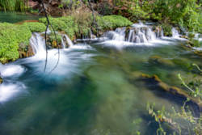
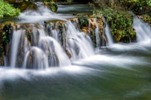
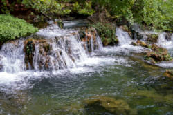
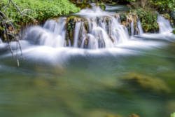
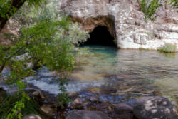

Fossil Springs
Useful Information



| Location: |
342529 Co Rd 1, Parker, AZ 85344.
Nort of Phoenix, south of Flagstaff. I 17 between Phoenix and Flagstaff, exit 286 Camp Verde, AZ 260 East, turn right on AZ 260 to Strawberry. From Strawberry West Fossil Creek Road aka Forest Road 308 to Bob Bear Trail trailhead. (34.4066265, -111.5679331) |
| Open: |
no restrictions. Parking lot: APR to OCT daily 8-20, last entry 15. NOV to MAR no restrictions. [2026] |
| Fee: |
APR to OCT permit required. NOV to MAR free. [2026] |
| Classification: | Tufa Deposits Sinter Terraces |
| Light: | n/a |
| Dimension: | Yavg=4540 m³/h. |
| Guided tours: |
self guided. Bob Bear Trail: L=6.6 km, VR=590 m. Flume Trail: L=7.1 km, VR=150 m. Fossil Creek Road 708: L=8.2 km, VR=749 m. |
| Photography: | allowed |
| Accessibility: | no |
| Bibliography: | |
| Address: | Coconino National Forest Supervisor’s Office, 1824 S. Thompson St., Flagstaff, AZ 86001, Tel: +1-928-527-3600. SM.FS.Cof_Webmail@usda.gov |
| As far as we know this information was accurate when it was published (see years in brackets), but may have changed since then. Please check rates and details directly with the companies in question if you need more recent info. |
|
History
Description


Fossil Springs is a tufa deposit with rimstone pools on Fossil Creek north of Flagstaff in Fossil Creek Wilderness in Coconino National Forest. This area is semi-arid, like much of Arizona, and the creeks are actually dry most of the years. Not so for Fossil Springs, where a series of springs gushes some 4540 m³/h year-round. This is quite exceptional and creates a humid climate and green oasis in the almost 500 m deep Fossil Creek canyon. The water is karst water and thus very rich in limestone. Around the springs, the water loses carbon dioxide due to the higher temperature, less carbon dioxide in the ambient air, plants that absorb carbon dioxide, and other factors. The result is that the water is not able to keep the limestone dissolved, and it is deposited in large amounts, forming bulbous structures, steps and evel rimstone pools. There are hundreds of small waterfalls. After some time the limestone is deposited, and the tufa formations end.
The tufa deposits are just a small part of the sights on this trail. There are also two waterfalls, the gorge, and the impressive landscape. Hiking shoes, sun protection, and enough water are essential. Also, be aware that this is a permit area, which means you need a permit to enter and a reservation for the car park, both is available online from the Forest Service. The trail is called Bob Bear Trail (6.6 km) from the southeast near Strawberry, formerly it was actually named Fossil Springs Trail. From the other side the trail is named Flume Trail (7.1 km), and there is a parking lot and trail head in the southwest. Both trailheads are actually on Fossil Creek Road 708, unfortunately this road is closed for vehicles between the two trailheads, and to reach this side you have to leave AZ 260 right behind Camp Verde, and it is a 27 km long and windig drive on FR 308 to get there. However, you can make a round trip by walking on 708 from one trailhead to the other, which is a 8.2 km hike with 600 m elevation difference. As you can see it is a minimum hike of 12 km and if you make the full round trip its 22 km. This is definitely a day trip and requires some physical fitness.
The river is the border between Tonto National Forest and Coconino National Forest, but the Wilderness ist managed by Coconino National Forest. The pictures on this page were provided by Deborah Lee Soltesz from the USFS Coconino National Forest and are Public Domain.
 Search DuckDuckGo for "Fossil Springs"
Search DuckDuckGo for "Fossil Springs" Google Earth Placemark
Google Earth Placemark OpenStreetMap
OpenStreetMap Fossil Creek Wild and Scenic River, official website (visited: 27-FEB-2026)
Fossil Creek Wild and Scenic River, official website (visited: 27-FEB-2026) Index
Index Topics
Topics Hierarchical
Hierarchical Countries
Countries Maps
Maps{kind=link}
{kind=link}
{kind=link}
{kind=link}
{kind=link}